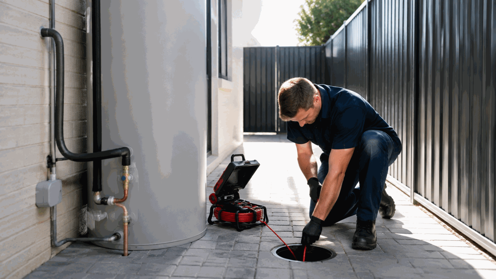

Guide: plumbing or electrical hot-water symptoms
Find related Perth service information and practical guidance.
View Guide: plumbing or electrical hot-water symptoms →Help for no hot water, reduced temperature, inconsistent supply, pressure changes or visible water near a hot-water unit.
Call 0413 477 667
Hot-water problems can involve plumbing, electrical components or both. The safest useful information is the unit location, what has changed, which fixtures are affected and any readable model details visible without removing a cover. Do not open a hot-water unit or handle any wiring.
Ellis Services Group can assess and coordinate hot-water repair and maintenance enquiries in Perth. If water is near electrical components, do not touch the unit. Keep clear and let us know what you can observe safely.
Send an enquiryFind related Perth service information and practical guidance.
View Guide: plumbing or electrical hot-water symptoms →Find related Perth service information and practical guidance.
View Water leak detection →Find related Perth service information and practical guidance.
View Electrical service hub →It can be either, depending on the system and symptom. Describe the issue rather than trying to diagnose it yourself.
Include the property address, unit location, what changed, affected fixtures and any safely readable unit information.
No. Do not remove covers or handle wiring.
For managed properties, include the work order, access contact and approval pathway.
Contact Ellis Services Group